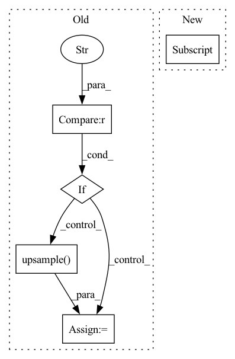

Pattern ID :23620

Before Change
else:
idx = 1
flip_output = flip_output[idx]
if "align" in config.MODEL.NAME:
flip_output = F.upsample(input=flip_output,
size=(size[-2], size[-1]),
mode="bilinear", align_corners=True)
else:
flip_output = F.upsample(input=flip_output,
size=(size[-2], size[-1]),
mode="bilinear")
After Change
flip_output = model(torch.from_numpy(flip_img.copy()))
if config.MODEL.NUM_OUTPUTS > 1:
flip_output = flip_output[config.TEST.OUTPUT_INDEX]
flip_output = F.interpolate(
input=flip_output, size=size[-2:],
In pattern: SUPERPATTERN
Frequency: 3
Non-data size: 5
Instances
Fragment ID: 73834246
Project Name: chenjun2hao/ddrnet.pytorch
Commit Name: 3ce340bc520946fb220e83075f6e015bbe87cfe5
Time: 2019-12-12
Author: hsfzxjy@gmail.com
File Name: lib/datasets/lip.py
M Class Name: LIP
N Class Name: LIP
M Method Name: inference(5)
N Method Name: inference(5)
M Parent Class: BaseDataset
N Parent Class: BaseDataset
M File Name: lib/datasets/lip.py
N File Name: lib/datasets/lip.py
M Start Line: 120
M End Line: 155
N Start Line: 123
N End Line: 141
'>
Before Change
if pred.size()[-2] != size[-2] or pred.size()[-1] != size[-1]:
if "alignTrue" in config.MODEL.NAME:
pred = F.upsample(pred, (size[-2], size[-1]),
mode="bilinear", align_corners=True)
else:
pred = F.upsample(pred, (size[-2], size[-1]),
mode="bilinear")
After Change
if pred.size()[-2] != size[-2] or pred.size()[-1] != size[-1]:
pred = F.interpolate(
pred, size[-2:],
mode="bilinear", align_corners=config.MODEL.ALIGN_CORNERS
)
'>
Fragment ID: 73834247
Project Name: chenjun2hao/ddrnet.pytorch
Commit Name: 3ce340bc520946fb220e83075f6e015bbe87cfe5
Time: 2019-12-12
Author: hsfzxjy@gmail.com
File Name: lib/core/function.py
M Class Name: AnonimousClass
N Class Name: AnonimousClass
M Method Name: testval(6)
N Method Name: testval(6)
M Parent Class:
N Parent Class:
M File Name: lib/core/function.py
N File Name: lib/core/function.py
M Start Line: 172
M End Line: 191
N Start Line: 166
N End Line: 178
'>
Before Change
flip=config.TEST.FLIP_TEST)
if pred.size()[-2] != size[0] or pred.size()[-1] != size[1]:
if "alignTrue" in config.MODEL.NAME:
pred = F.upsample(pred, (size[-2], size[-1]),
mode="bilinear", align_corners=True)
else:
pred = F.upsample(pred, (size[-2], size[-1]),
mode="bilinear")
After Change
if pred.size()[-2] != size[0] or pred.size()[-1] != size[1]:
pred = F.interpolate(
pred, size[-2:],
mode="bilinear", align_corners=config.MODEL.ALIGN_CORNERS
)
'>
Fragment ID: 73834248
Project Name: chenjun2hao/ddrnet.pytorch
Commit Name: 3ce340bc520946fb220e83075f6e015bbe87cfe5
Time: 2019-12-12
Author: hsfzxjy@gmail.com
File Name: lib/core/function.py
M Class Name: AnonimousClass
N Class Name: AnonimousClass
M Method Name: test(6)
N Method Name: test(6)
M Parent Class:
N Parent Class:
M File Name: lib/core/function.py
N File Name: lib/core/function.py
M Start Line: 229
M End Line: 248
N Start Line: 219
N End Line: 230